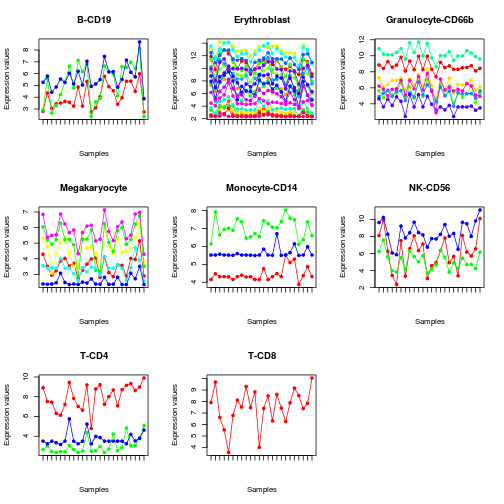

Data-driven marker selection (experimental)
# Using the SCOREM approach one can filter marker genes that have consisten# whose expression values in a given datasets.# This is because the notion of marker can be very dependent on the data, biological# conditions or platform used to define them.# load kidney transplant dataset from Shen-Orr et al. (2010)eset <- ExpressionMix('GSE20300', verbose=TRUE)Loading dataset 'GSE20300' ... OK# load HaemAtlas marker gene list (on Illumina)ml <- MarkerList('HaemAtlas')ml# convert marker IDs to Affy IDs from dataset# using stringent one to one mappingmla <- convertIDs(ml, eset, method='1:1', verbose=TRUE)# Converting 2069 markers from Annotation (illuminaHumanv2.db) to Annotation (hgu133plus2.db) ... OK [643/2069 (1:1)] # Processing 2069 markers from Annotation (illuminaHumanv2.db) to Annotation (hgu133plus2.db) ... OK [631/2069 (1:1)]summary(mla)# plot expression profile of each set of markers (only the first 10)profplot(mla[, 1:10], eset, split=TRUE, lab='')
# filter out using SCOREMsml <- extractMarkers(mla, eset, method='scorem', alpha=.005)# plot selected markersprofplot(sml, eset, split=TRUE, lab='')